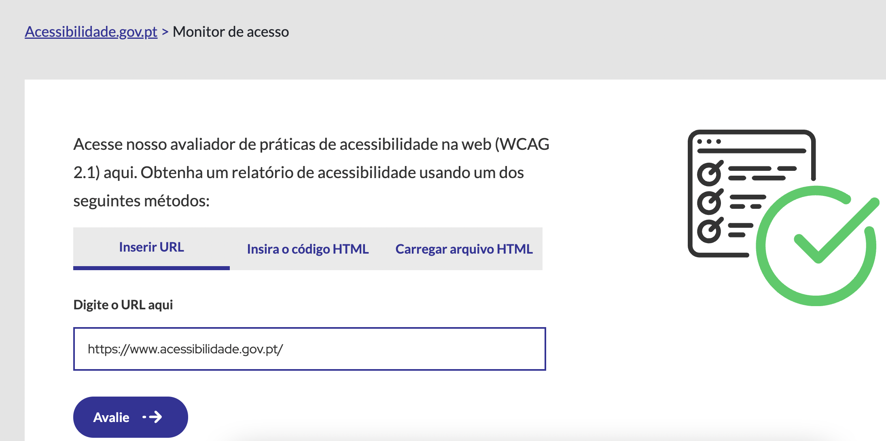
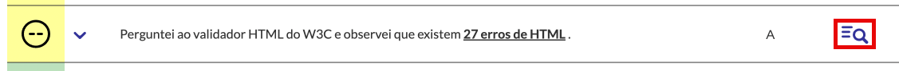

Método de avaliação
- No Access Monitor, inserir a url da página para avaliação. A avaliação deve ser feita às páginas Home+ (Homepage e todas as páginas linkadas a esta diretamente).

- Se a página apresentar erros de HTML, uma mensagem é apresentada no relatório do Access Monitor indicando o total de erros identificados na página. É possível consultar mais informações sobre os erros.

- Os erros de HTML são apresentados no Nu Validator quando selecionamos a opção "Filtro de mensagens (mensage filtering)"